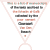

<!DOCTYPE html>
<html lang="en">
<head>
    <meta charset="UTF-8">
    <meta http-equiv="X-UA-Compatible" content="IE=edge">
    <meta name="viewport" content="width=device-width, initial-scale=1.0">
    <title>Ikhwān manuscripts</title>
    <!--
    <link rel="stylesheet" href="https://cdn.datatables.net/2.0.5/css/dataTables.dataTables.css" />
    -->
    <link rel="stylesheet" href="css/dataTables.css" />
    <link rel="stylesheet" href="css/index.css" />
    <!--
    <script src="https://ajax.googleapis.com/ajax/libs/jquery/3.7.1/jquery.min.js"></script>
    <script src="https://cdn.datatables.net/2.0.5/js/dataTables.js"></script>
    
    <script src="https://cdnjs.cloudflare.com/ajax/libs/PapaParse/5.4.1/papaparse.min.js" integrity="sha512-dfX5uYVXzyU8+KHqj8bjo7UkOdg18PaOtpa48djpNbZHwExddghZ+ZmzWT06R5v6NSk3ZUfsH6FNEDepLx9hPQ==" crossorigin="anonymous" referrerpolicy="no-referrer"></script>
    -->
    <script src="js/jquery.min.js"></script>
    <script src="js/dataTables.js"></script>
    <script src="js/natural.js"></script>
    <script src="js/papaparse.min.js"></script>
    <!--Noto font: -->
    <link rel="preconnect" href="https://fonts.googleapis.com">
    <link rel="preconnect" href="https://fonts.gstatic.com" crossorigin>
    <link href="https://fonts.googleapis.com/css2?family=Noto+Sans+Display:ital,wght@0,100..900;1,100..900&display=swap" rel="stylesheet">
</head>
<body dir="auto">
    <div id="header">
        <!--
        <div id="title-wrapper">
            <div class="header-title title-background">
                <h1 >Ikhwān al-Ṣafā manuscripts</h1>
            </div>
            <div class="header-title title-foreground">
                <h1>Ikhwan al-Safa manuscripts</h1>
            </div>
        </div>
        
        -->
        
    </div>
    <div id="tableDiv">
      <table id="msTable" class="cell-border"></table>  <!--display cell borders-->
      <div id="toggleDiv"></div>
    </div>
    <div id="footer">
      <p class="triangles">
        The layout of this website is based on 
        <a target="_blank" href="https://digital.bodleian.ox.ac.uk/objects/12fcf5c5-2bb0-4e0e-b8a9-7620bd6bec90/surfaces/d503afb6-1cd0-4e25-b5db-604481968a13/">Bodleian MS. Laud Or. 260</a>
      </p>
      <p class="triangles">
        Data collected by Gowaart Van Den Bossche
      </p>
      <p class="triangles">
        Website by Peter Verkinderen
      </p>
      <p class="triangles">
        View the data on <a href="https://github.com/ikhwansafamss/catalogue/tree/main/v2025-05-09/data" target="_blank">GitHub</a>
      </p>
      <p class="triangles">
        Version history <a href="release-notes.html">here.</a>
      </p>
      <p>
        <span class="single-triangle"></span>
        <span class="single-triangle"></span>
        <span class="single-triangle"></span>
      </p>
      <p>
        <span class="single-triangle"></span>
      </p>
    </div>
    
    <script src="js/index.js"></script>
    
</body>
</html>
